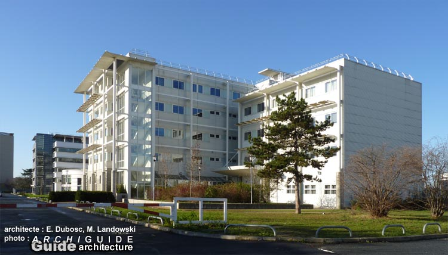

PROJET ÉTUDIANT · ÉVÉNEMENT SPORTIF
Courir ensemble.
Agir ensemble.
Un rendez-vous sportif, convivial et solidaire imaginé au cœur de Nanterre.
Découvrir la course10 km pour se dépasser
QUI SUIS-JE ?
À propos de moi
Je m'appelle Pierre Lalouette et je suis étudiant en Master 2 Management du sport à l'Université Paris Nanterre. Passionné de sport depuis mon enfance, je m'intéresse particulièrement au football et au tennis, deux disciplines que je pratique et suis régulièrement. Au-delà de la pratique sportive, je m'intéresse à l'organisation d'événements et à l'engagement associatif. J'apprécie notamment la capacité du sport à rassembler les personnes et à créer du lien social.
Ce site présente un projet pédagogique de course à pied. Il me permet de mobiliser ces compétences autour d'un événement accessible, fédérateur et porteur de valeurs positives.
ÉTUDIANT
Pierre Lalouette
Master 2 · STAPS / Management du sport
Gestion de projet sportifMA FORMATION
Mon Master 2 MELS

MON UNIVERSITÉ
Université Paris Nanterre
L'Université Paris Nanterre propose des formations dans de nombreux domaines, notamment celui du sport et de son management. J'ai choisi d'intégrer le Master MELS car je souhaite travailler dans l'organisation d'événements sportifs et mieux comprendre le fonctionnement des structures sportives. Cette formation me permet d'acquérir des compétences utiles pour mon futur parcours professionnel, tout en restant dans un domaine qui me passionne.
Son environnement universitaire permet de développer des connaissances théoriques tout en les reliant à des situations concrètes, notamment dans le champ du sport et de l'événementiel.
Découvrir l'université ↗